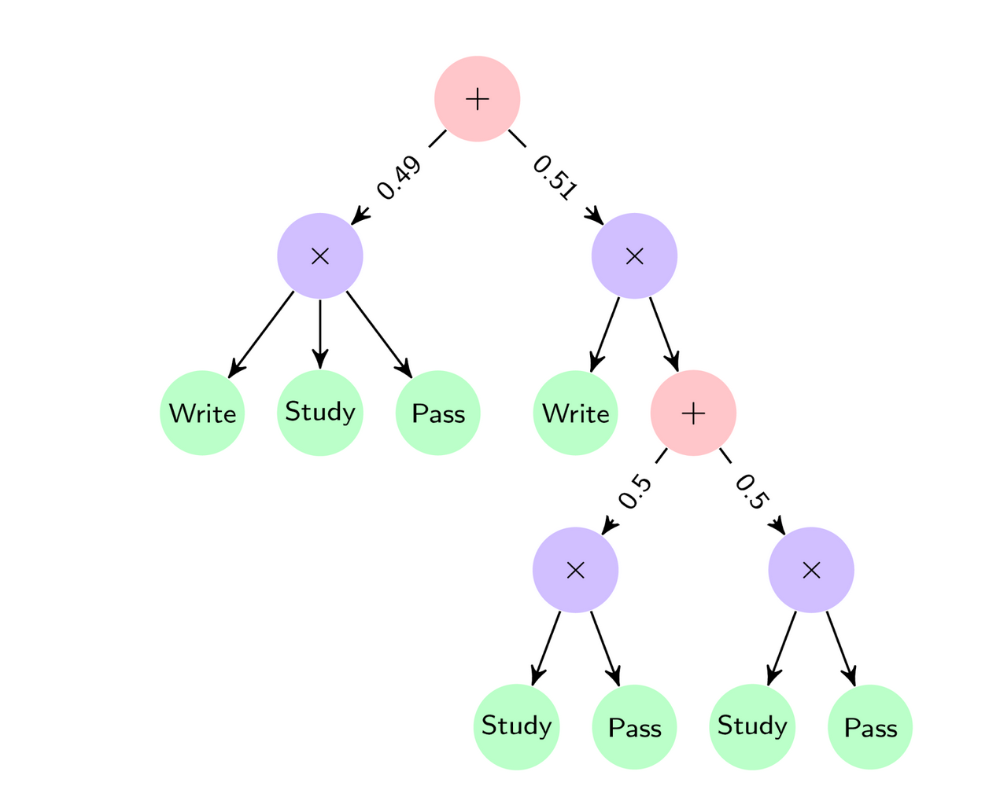
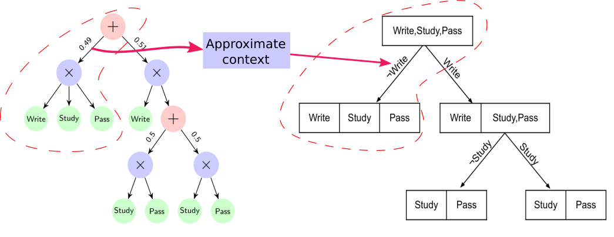
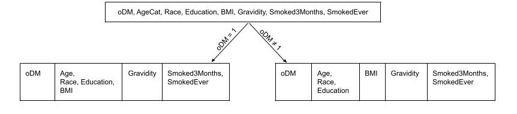

ExSPN: Explaining Deep Tractable Probabilistic Models
Athresh Karanam, Saurabh Mathur, Predrag Radivojac, David M. Haas, Kristian Kersting, Sriraam Natarajan · PGM 2022

Accepted at the 11th International Conference on Probabilistic Graphical Models (PGM 2022). In this work: (1) we developed CSI-Trees, a tree-structured representation for context-specific independence relations; (2) we developed the ExSPN algorithm to explain sum-product networks in terms of the context-specific independences encoded in them; (3) we applied our algorithm to a gestational diabetes prediction dataset.
Sum-Product Networks
Sum-Product Networks (SPN) are a class of deep probabilistic models. Their structure is represented by a Directed Acyclic Graph (DAG). The DAG consists of Sum ($+$) and Product ($\times$) nodes as internal nodes, and univariate distributions at the leaf nodes. Sum nodes represent a mixture of distributions and Product nodes represent a factorized distribution. While SPNs guarantee tractable inference, the presence of latent variables due to the Sum nodes makes them hard to explain to domain experts.

For example, the SPN shown in the figure above represents the joint distribution $P(Write, Study, Pass)$ over three variables $Write$ ($W$), $Study$ ($S$) and $Pass$ ($P$).
Where $P_1, \dots, P_8$ are the univariate probability distributions at the leaf nodes, from left to right.
Context-specific Independence
Context-Specific Independence (CSI) is a generalization of the notion of Conditional Independence. For example, consider the following statement: “Passing the exam is independent of Studying if I don't write my answers.” Here, the independence relation holds only in a particular region of the sample space where $Write$ is False. Formally, $Pass \perp\kern-5pt\perp Study \mid (\neg Write)$.
ExSPN: Explaining Sum-Product Networks
In this work, we propose the $\mathcal{EXSPN}$ algorithm to explain SPNs using the Context-Specific Independences encoded in them. We use the notion of a CSI to define a CSI-tree that represents a hierarchy of contexts. In a CSI-Tree, the edge labels contain conditions that define the context and the partitions in each node represent groups of independent variables. As shown in the figure below, $\mathcal{EXSPN}$ converts a given SPN to a CSI-tree by empirically approximating the context defined by each Sum node, and reading off the independences at each Product node.

Application to Gestational Diabetes
We applied this to a domain where the goal was to predict gestational diabetes from clinical observations. The figure below shows the first two levels of the CSI-tree extracted from an SPN fit on the data.

Here, $oDM$ is a boolean variable that represents whether or not the person has Gestational Diabetes. $Race$ is a categorical variable having 8 categories namely, Non-Hispanic White (1), Non-Hispanic Black (2), Hispanic (3), American Indian (4), Asian (5), Native Hawaiian (6), Other (7), and Multiracial (8). $Smoked3Months$ and $SmokedEver$ are boolean variables representing tobacco consumption.
While the $BMI$ variable is independent of other variables when $oDM \neq 1$, it is dependent on $Age, Race, Education$ for the case when $oDM = 1$.
Presentation at UAI 2022 TPM Workshop
Citation
Athresh Karanam, Saurabh Mathur, Predrag Radivojac, David M. Haas, Kristian Kersting, Sriraam Natarajan. (2022) Explaining Deep Tractable Probabilistic Models: The sum-product network case. In: International Conference on Probabilistic Graphical Models. PGM 2022.
@inproceedings{karanam2022exspn,
author = {Athresh Karanam, Saurabh Mathur, Predrag Radivojac, David M. Haas, Kristian Kersting and Sriraam Natarajan},
title = {Explaining Deep Tractable Probabilistic Models: The sum-product network case},
year = {2022},
booktitle = {International Conference on Probabilistic Graphical Models}
}
Acknowledgements
The authors acknowledge the support by NIH grant R01HD101246, AFOSR award FA9550-18-1-0462, and ARO award W911NF2010224. KK acknowledges the support of the Hessian Ministry of Higher Education, Research, Science and the Arts (HMWK) in Germany, project “The Third Wave of AI.” DH acknowledges support from NICHD: U10 HD063037, Indiana University.